渋谷には、初診料0円・薬代だけで始められるAGAクリニックが12院もあります。
しかし、料金や治療法、駅からの近さは院ごとに大きく違うため、「どこを選べばいいのか」で迷う人も多いのも事実。
本記事では、12院を料金・アクセス・口コミで下調べし、あなたに合う一院を見つけやすくしました。
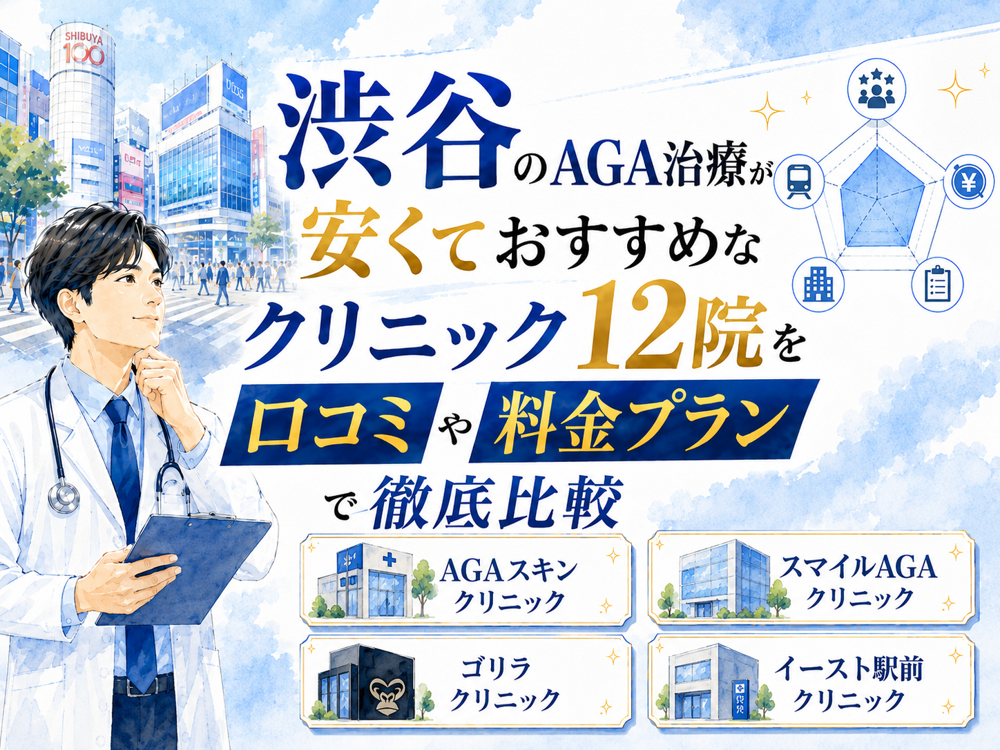
渋谷でAGA治療を扱うクリニックは、渋谷駅・道玄坂・神泉・恵比寿といった主要エリアに集中しています。料金体系は初診料0円・薬代だけで始められる駅前クリニックから、メソセラピーやエクソソーム導入まで扱う美容皮膚科まで幅広く、自分の進行度や予算に合わせて選びやすいのが渋谷エリアの特徴です。
ここからは、料金が安くて口コミ評価も高い渋谷のAGAクリニックを12院厳選し、料金プラン・特徴・アクセス・基本情報を1院ずつ整理して紹介します。気になる院が複数あれば、まずはカウンセリング無料の院から比較していくのがおすすめです。
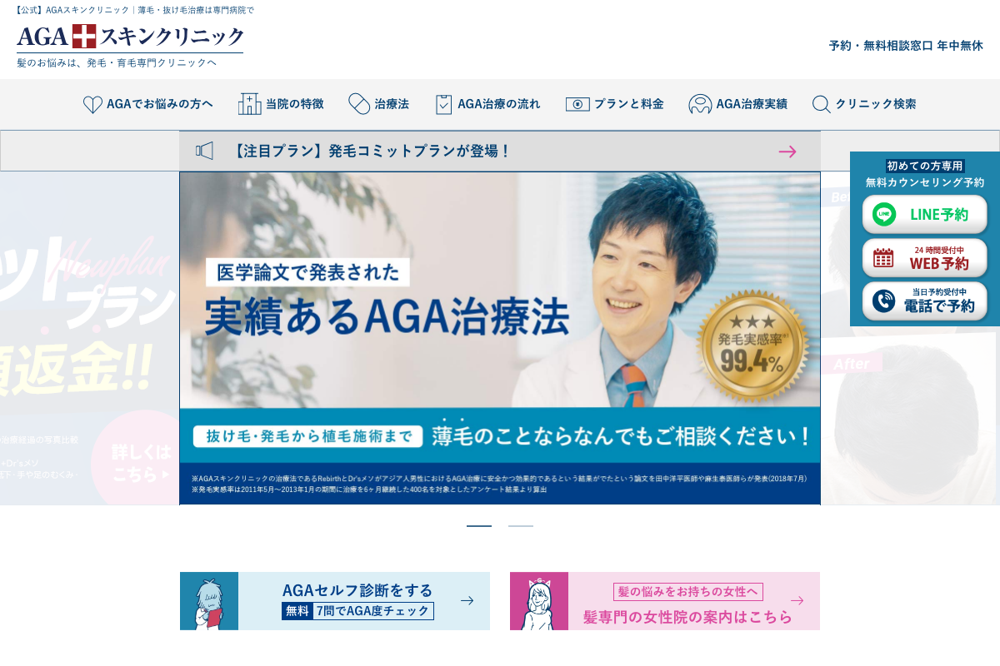
| クリニック名 | AGAスキンクリニック 渋谷駅前院 |
|---|---|
| AGA治療薬 | 予防プラン（フィナステリド内服） はじめて発毛プラン（Rebirth タブレットA・B） しっかり発毛プラン（Rebirth A〜C＋リキッド） 注入治療 Dr'sメソ |
| 診察料 | 初診・再診・カウンセリング 0円 |
| 支払い方法 | 現金・クレジットカード・医療ローン |
| 住所 | 〒150-0043 東京都渋谷区道玄坂2-3-1 渋谷駅前ビル4F |
AGAスキンクリニック渋谷駅前院は、各線「渋谷駅」から徒歩1分、道玄坂2-3-1の渋谷駅前ビル4階にあるAGA・薄毛治療専門のクリニックです。カウンセリングから会計まで完全個室・完全予約制で行われるため、人通りの多い渋谷でも他の患者と顔を合わせる心配がなく、周囲を気にせず通える設計になっています。
診療時間は10:00〜22:00で年中無休。仕事終わりでも立ち寄りやすい22時までの長時間営業に加え、初回カウンセリングはマイクロスコープを使った頭皮診断を含めて無料、血液検査も費用なしで受けられるため、治療開始前の出費を抑えやすいのが魅力です。
予防プランは月3,700円（税込）〜、発毛プランなら月額16,800円（税込）〜と、進行度や予算に合わせて複数プランから選べる料金設計です。オンライン診療にも対応し、薬の送料も無料なので、来院が難しい日でも治療を継続しやすい環境が整っています。
| 予防プラン | 初月3,700円・2ヶ月目以降6,600円/月（フィナステリド内服） |
|---|---|
| 発毛プラン | はじめて発毛プラン 月16,800円／しっかり発毛プラン 月40,600円 |
| 診療時間 | 10:00〜22:00（年中無休） |
| アクセス | 各線「渋谷駅」徒歩1分 |
| オンライン診療 | 対応（薬の送料無料） |
AGAスキンクリニックの中核となるのが、オリジナル発毛薬Rebirth（リバース）タブレットです。タブレットA（フィナステリド）・タブレットB（ミノキシジル）・タブレットC（各種ビタミン・ミネラル）を症状に合わせて組み合わせ、予防から本格発毛まで段階的にプランを組み立てられる構成になっています。
「はじめて発毛プラン」はタブレットA・Bの組み合わせで月16,800円、より積極的に攻める「しっかり発毛プラン」はタブレットA〜C＋リキッド（外用薬）で月40,600円が目安です。さらに発毛スピードを底上げしたい場合は、有効成分を頭皮に直接届ける注入治療Dr'sメソ（1回55,000円）を組み合わせる選択肢もあります。
RebirthやミノキシジルなどはAGAスキンクリニックのオリジナル処方を含むため、国内承認薬との違いや医薬品副作用被害救済制度の対象可否について、医師の説明を受けたうえで採否を判断する流れになります。料金は税込で、公式サイトおよびカウンセリング時の案内をもとにした目安です。最新の総額や条件は必ずクリニックで確認してください。
| 予防プラン | 初月3,700円／2ヶ月目以降6,600円（フィナステリド内服） |
|---|---|
| はじめて発毛プラン | 月16,800円（Rebirth タブレットA・B） |
| しっかり発毛プラン | 月40,600円（Rebirth タブレットA〜C＋リキッド） |
| 注入治療 Dr'sメソ | 1回 55,000円 |
| 初診・再診・カウンセリング | 無料 |
| 頭皮診断・血液検査 | 無料 |
渋谷駅前院のメリットは、渋谷駅徒歩1分・10〜22時・年中無休という通いやすさと、完全個室・完全予約制によるプライバシー配慮の両立です。マイクロスコープ診断と血液検査を無料で受けたうえで治療方針を立てられる点、予防プラン月3,700円という低い入口価格も、初めての方が始めやすい材料になります。
一方でデメリットとして、本格的な発毛を狙うと月16,800〜40,600円＋注入治療1回55,000円と費用が大きくなりやすい点があります。Rebirthはオリジナル処方を含むため、安全性に関するスタンスや国内承認薬との違いを、初回カウンセリングで明確にしておくと安心です。
渋谷駅を日常的に使っていて、個室でじっくり相談しながらAGA治療を始めたい人や、予防段階から医師に診てもらいたい人に強くおすすめできるクリニックです。完全個室・完全予約制なので、人目が気になりやすい渋谷でも安心して通えます。
通院イメージとしては、まず無料カウンセリングで頭皮診断・血液検査を受け、予防プラン月3,700円からスタート。効果や進行度を見ながら、はじめて発毛プラン（月16,800円）→しっかり発毛プラン（月40,600円）へとステップアップし、必要に応じてDr'sメソを併用する構成が標準的です。
料金プランの組み立て例は、「まずは予防から」なら初月3,700円→2ヶ月目以降6,600円のシンプル運用、「進行が早めで攻めたい」ならはじめて発毛プラン16,800円→3〜6ヶ月時点でしっかり発毛プラン40,600円へのステップアップが現実的。22時まで診療しているため、平日夜の受診で月1回ペースを保ちやすいのも特徴です。
口コミでは「個室で他の患者と顔を合わせず安心」「カウンセリングが丁寧」「発毛実感の声が多い」という評価が中心です。一方でRebirthはオリジナル処方を含むため、医師からの説明をしっかり受けて納得してから採否を決めるのが大切です。費用面でも、発毛プランは月2〜4万円規模になるため、月予算と継続期間を事前にシミュレーションしておくと過剰契約を避けやすくなります。
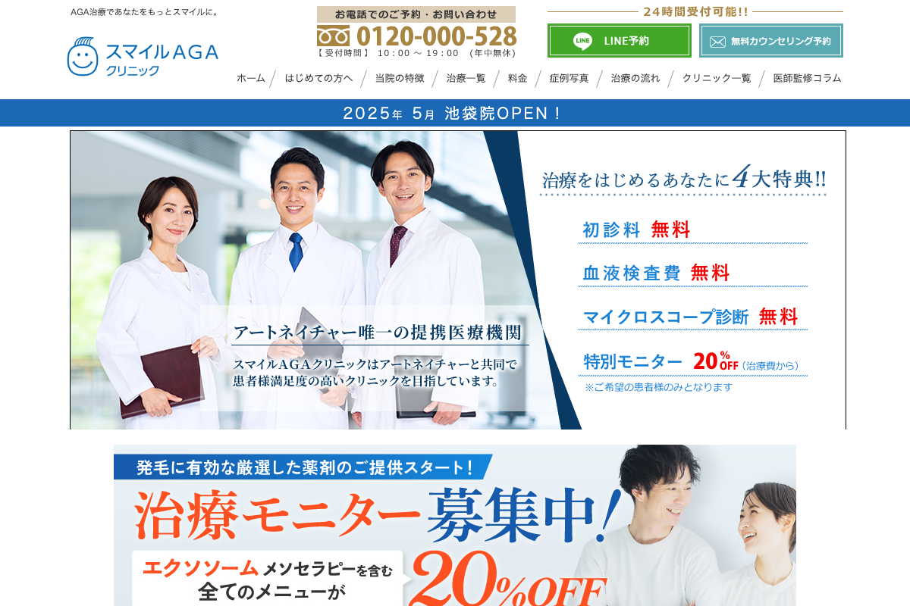
| クリニック名 | スマイルAGAクリニック渋谷 |
|---|---|
| AGA治療薬 | フィナステリド／プロペシア ザガーロ（デュタステリド） スマイル発毛処方（内服＋外用） メソセラピー |
| 診察料 | カウンセリング・初診料 0円 |
| 支払い方法 | 現金・クレジットカード・医療ローン |
| 住所 | 〒150-0002 東京都渋谷区渋谷1-17-14 ACN渋谷ビル4F |
スマイルAGAクリニック渋谷は、東京メトロ渋谷駅20a出口から徒歩1分、渋谷1-17-14のACN渋谷ビル4階にあるAGA・薄毛治療専門クリニックです。男女問わず診療を受けられるのが特徴で、渋谷・新宿・八重洲・池袋と都内に4院を展開しているため、引っ越しや職場変化があっても通院を続けやすい環境が整っています。
カウンセリングは無料かつ予約制で、マイクロスコープを使った頭皮チェックと医師の診察が初診から受けられます。初診料・血液検査も無料で費用の入口が低く、AGAについて感じている不安を解消してから治療に臨みたい人にぴったりです。
最大の打ち出しは、初回フィナステリド1,600円（税込）から始められる試しやすさです。水曜は22時まで、それ以外も19時まで診療しており、土日祝も対応しているため、帰宅が遅い日でも通院できます。オンライン診療にも対応しています。
| 予防プラン | フィナステリド 月6,600円（初回1,600円） |
|---|---|
| 発毛プラン | スマイル発毛処方 月14,400〜44,000円 |
| 診療時間 | 月火木金土日10:00〜19:00／水10:00〜22:00 |
| アクセス | 東京メトロ渋谷駅20a出口 徒歩1分 |
| オンライン診療 | 対応 |
スマイルAGAクリニックの治療は、抜け毛を抑えるフィナステリド・プロペシア・ザガーロといった内服薬を基本に、発毛を狙うスマイル発毛処方（内服＋外用の組み合わせ）、さらに有効成分を頭皮に届けるメソセラピーまで段階的に選べる構成です。
初回フィナステリドは1,600円（税込）と心理的ハードルが低く、まず1ヶ月試したい人に向いています。継続する場合は月6,600円が目安で、より積極的に発毛を狙う場合はスマイル発毛処方（月14,400〜44,000円）へステップアップします。1〜2ヶ月に1回程度の通院ペースで、3ヶ月分のまとめ処方にも対応しているため、忙しい人でもペースを作りやすくなっています。
料金は税込で、公式サイトおよびカウンセリング時の案内をもとにした目安です。施術内容によっては血液検査代がかかる場合があるため、最新の総額や条件は必ずクリニックで確認してください。
| フィナステリド | 月6,600円（初回1,600円） |
|---|---|
| プロペシア | 月7,700円（初回4,620円） |
| ザガーロ | 月9,900円（初回5,830円） |
| スマイル発毛処方 | 月14,400〜44,000円（内服＋外用） |
| カウンセリング・初診料・血液検査 | 無料 |
渋谷院のメリットは、初回フィナステリド1,600円という低い入口価格と、カウンセリング・初診料・血液検査がすべて無料で費用の見通しを立てやすい点です。水曜22時まで・土日祝対応という診療時間も、仕事が不規則な人が通院を続けやすい材料になります。
一方でデメリットとして、本格的な発毛を狙うスマイル発毛処方は月14,400〜44,000円と幅が大きく、メソセラピーを併用するとさらに費用がかさみます。施術内容によって血液検査代15,000円がかかる場合もあるため、初回カウンセリングで総額の内訳を確認しておくと安心です。
薄毛が気になり始めた段階から、医師にじっくり相談しながら段階的に治療を始めたい人に向いているクリニックです。初回1,600円でフィナステリドを試せるため、「いきなり高額プランは不安」という人でも入りやすい設計になっています。
通院イメージは、無料カウンセリングで頭皮チェックを受け、初回フィナステリド1,600円でスタート。継続する場合は月6,600円のフィナステリド単剤、より攻めたい場合はスマイル発毛処方（月14,400円〜）に切り替えるかをカウンセリングで決めます。
都内に4院を展開しているため、引っ越しや転職で通院先を変えたい人にも相性が良いのが特徴です。渋谷で始めて、その後新宿・八重洲・池袋に移っても同じカルテで継続できる点は、長期治療を前提にすると見逃せないメリットです。
口コミでは「初回1,600円で気軽に試せた」「水曜は22時まで開いていて仕事帰りに通える」「カウンセリングが親身」という声が中心です。発毛処方やメソセラピーまで踏み込むと月数万円規模になるため、どこまで予算を投じるかを事前に決めておくと、無理なく続けられます。
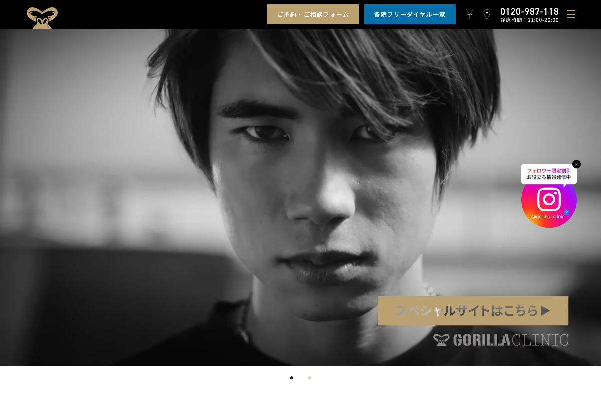
| クリニック名 | ゴリラクリニック 渋谷院・渋谷道玄坂院 |
|---|---|
| AGA治療薬 | フィナステリド（海外承認薬／国内承認薬） デュタステリド（国内承認薬・外用） ミノキシジル5mg Folixレーザー／効果実感3ヶ月コース |
| 診察料 | 0円（血液検査3,800円・初回処方時のみ） |
| 支払い方法 | 現金・クレジットカード・医療ローン |
| 住所 | 渋谷道玄坂院：渋谷区道玄坂2-11-1 JMFビル渋谷03 6F／渋谷院：渋谷区渋谷1-15-8 宮益O.Nビル2F |
ゴリラクリニックは男性専門の総合美容クリニックで、AGA治療に加えて医療脱毛・ニキビ治療・痩身など複数のメニューを取り扱っています。AGA通院であることが特定されにくく、デリケートな悩みを抱えやすい渋谷エリアの利用者にとって通いやすい環境です。
渋谷エリアには「渋谷院」（渋谷1-15-8 宮益O.Nビル2F・B3出口徒歩3分）と「渋谷道玄坂院」（道玄坂2-11-1 JMFビル渋谷03 6F・A0出口徒歩4分）の2院を展開しており、利便性に応じて通いやすい方を選べます。診療時間は11:00〜20:00です。
料金はカウンセリング料・頭髪検査料を含め、治療費以外の追加費用がかからない明朗会計になっており、毎月の出費を計算しやすいのが特徴です。3ヶ月分まとめて購入できる効果実感プランには全額返金保証も設定されており、初めての方でも入りやすい設計になっています。
| 予防プラン | フィナステリド（海外承認薬）月3,000円〜 |
|---|---|
| 発毛プラン | 効果実感3ヶ月コース 月8,500円（フィナ＋ミノキ内服） |
| 診療時間 | 11:00〜20:00 |
| アクセス | 渋谷道玄坂院 渋谷駅A0出口徒歩4分／渋谷院 B3出口徒歩3分 |
| オンライン診療 | 対応（無料） |
ゴリラクリニックのAGA治療は、抜け毛を抑えるフィナステリド単剤（海外承認薬月3,000円／国内承認薬月4,800円）を入口に、デュタステリド国内承認薬（月7,000円）、ミノキシジル5mg（月8,140円）、デュタステリド外用薬（ミノキシジル配合・月5,980円）など、単剤処方を細かく選べる構成です。
より積極的に発毛を狙う場合は、フィナステリド＋ミノキシジル内服をセットにした効果実感3ヶ月コース（月8,500円）や、Folixレーザー（月49,900円）が選択肢になります。効果実感3ヶ月コースには全額返金保証があり、契約時に血液検査も無料になるため、初めて本格的に取り組む人が試しやすい設計です。
料金は税込で、公式サイトおよびカウンセリング時の案内をもとにした目安です。フィナステリドの海外承認薬は国内承認薬と異なる位置づけになるため、医師の説明を受けたうえで採否を判断してください。最新の総額や条件は必ずクリニックで確認しましょう。
| フィナステリド（海外承認薬） | 月3,000円 |
|---|---|
| フィナステリド（国内承認薬） | 月4,800円 |
| デュタステリド（国内承認薬） | 月7,000円 |
| ミノキシジル5mg | 月8,140円 |
| 効果実感3ヶ月コース | 月8,500円（フィナ＋ミノキ内服・全額返金保証） |
| 血液検査 | 3,800円（初回処方時のみ・3ヶ月コースは無料） |
ゴリラクリニックのメリットは、男性専門院ならではの相談しやすさと、追加費用のかからない明朗会計、そして渋谷エリアに2院あって通いやすい方を選べる点です。効果実感3ヶ月コースの全額返金保証も、初めての人が一歩踏み出しやすい材料になります。
一方でデメリットとして、フィナステリドの海外承認薬は国内承認薬とは異なる位置づけになるため、安全性のスタンスを確認しておく必要があります。また、Folixレーザーなど積極的な発毛メニューは月数万円規模になるため、予防中心で続けるのか発毛まで狙うのかを最初に決めておくと費用を見積もりやすくなります。
AGA以外のスキンケアや医療脱毛も含めて男性の悩みをまとめて相談したい人、料金の透明性を重視する人に向いているクリニックです。男性専門なので、待合室で女性と顔を合わせることがなく、デリケートな悩みも相談しやすい環境です。
通院イメージは、無料カウンセリングで頭髪検査を受け、まずはフィナステリド海外承認薬（月3,000円）か効果実感3ヶ月コース（月8,500円）からスタート。3ヶ月コースは全額返金保証があるため、効果を見極めてから継続を判断できます。
渋谷エリアに2院あるため、自分の生活動線に近い方を選べるのも続けやすさにつながります。A0出口側の動線なら道玄坂院、B3出口側ならゴリラクリニック渋谷院が便利です。オンライン診療も無料で利用できるので、来院が難しい月はオンラインに切り替える運用も可能です。
口コミでは「男性専門で気兼ねなく通える」「料金が明朗で追加費用が読める」「2院あって通いやすい」という評価が中心です。海外承認薬と国内承認薬の違いや、Folixレーザーなど高額メニューの要否は、カウンセリングでしっかり確認してから決めるのがおすすめです。
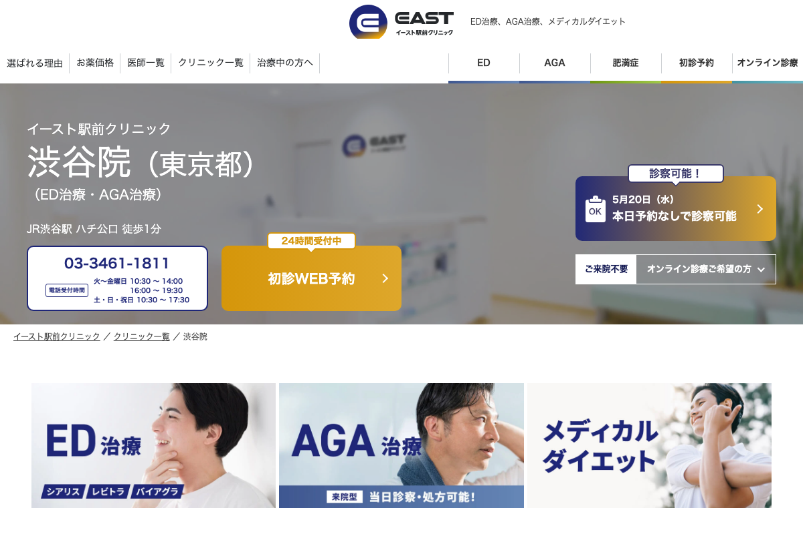
| クリニック名 | イースト駅前クリニック 渋谷院 |
|---|---|
| AGA治療薬 | フィナステリド1mg デュタステリド0.5mg ミノキシジル外用薬5% フィナ＋ミノキ／デュタ＋ミノキ内服セット |
| 診察料 | 0円（薬の処方がない場合は3,300円） |
| 支払い方法 | 現金・クレジットカード |
| 住所 | 〒150-0041 東京都渋谷区神南1-23-7 第一榮來ビル4階 |
イースト駅前クリニック渋谷院は、渋谷駅ハチ公口から徒歩1分、神南1-23-7の第一榮來ビル4階にあるクリニックです。初診・再診ともに診察料が無料で、費用は薬代のみという明快な料金体系が最大の特徴です。
月曜以外は土日祝も診療に対応し、平日は最大20時まで受付。予約不要でも来院できるため、仕事の合間にふらりと立ち寄れる手軽さがあります。渋谷周辺で働く会社員が通いやすい立地・時間設計です。
初回の方で6ヶ月プランに不安がある場合は1ヶ月トライアルプランが用意されており、まず試したい人でも入りやすい設計。6ヶ月セットプランに進むと月額をさらに抑えられ、オンライン診療にも対応しているため、来院できない日でも治療を継続できます。
| 予防プラン | フィナステリド1mg 1ヶ月トライアル1,650円 |
|---|---|
| 発毛プラン | 6ヶ月セット フィナ＋ミノキ内服 月5,945円（総額35,670円・初診限定） |
| 診療時間 | 火〜金10:00〜14:30／15:30〜20:00、土日祝10:00〜18:00 |
| アクセス | 渋谷駅ハチ公口 徒歩1分 |
| オンライン診療 | 対応 |
イースト駅前クリニックの治療は、抜け毛を抑えるフィナステリド・デュタステリド、発毛を促すミノキシジル外用薬を基本に、フィナ＋ミノキやデュタ＋ミノキの内服セットを組み合わせる構成です。診察料が無料で薬代だけのため、毎月の費用が読みやすいのが大きな利点です。
初回限定の6ヶ月セットプランは、フィナステリド＋ミノキシジル内服薬が総額35,670円（1ヶ月あたり5,945円）、デュタステリド＋ミノキシジル内服薬が総額41,730円（1ヶ月あたり6,955円）。まず試したい人向けの1ヶ月トライアルは、フィナステリド1mg 1,650円／30日分、デュタステリド0.5mg 2,750円／30日分、ミノキシジル外用薬5% 1,980円／1本です。
料金は税込で、公式サイトおよびカウンセリング時の案内をもとにした目安です。国内正規品を扱う一方、薬の処方がない場合のみ診察料3,300円がかかる点には注意してください。最新の総額や条件は必ずクリニックで確認しましょう。
| フィナステリド1mg（1ヶ月） | 1,650円／30日分 |
|---|---|
| デュタステリド0.5mg（1ヶ月） | 2,750円／30日分 |
| ミノキシジル外用薬5% | 1,980円／1本 |
| 6ヶ月セット（フィナ＋ミノキ内服） | 35,670円（月5,945円・初診限定） |
| 6ヶ月セット（デュタ＋ミノキ内服） | 41,730円（月6,955円・初診限定） |
| 診察料 | 0円（処方なしのみ3,300円） |
渋谷院のメリットは、診察料0円・薬代のみという明快さと、渋谷駅ハチ公口徒歩1分・土日祝も診療・予約不要という通いやすさです。6ヶ月セットプランを使えば月5,945円〜と継続コストを抑えられ、1ヶ月トライアルで気軽に試すこともできます。
一方でデメリットとして、メソセラピーや再生医療などの注入治療は扱っていないため、薬では物足りなくなった場合は他院との併用が必要になります。また、薬の処方がない場合のみ診察料3,300円がかかる点も覚えておくとよいでしょう。あくまで「薬代だけでシンプルに続けたい人」向けの院です。
できるだけ予算が立てやすく、ライフスタイルに合わせてAGA治療を始めたい人に向いているクリニックです。診察料0円・薬代のみという料金体系は、毎月の出費を最小化したい人にとって大きな魅力です。
通院イメージは、まず1ヶ月トライアル（フィナステリド1,650円）で試し、続けられそうなら6ヶ月セット（月5,945円）に切り替える流れが標準的。予約不要なので、仕事帰りや昼休みのスキマ時間に立ち寄って処方を受けるだけ、というシンプルな運用ができます。
渋谷駅ハチ公口徒歩1分・土日祝も診療という立地時間設計は、平日忙しい会社員に特に刺さります。オンライン診療にも対応しているため、出張や繁忙期で来院できない月は自宅配送に切り替えることも可能です。
口コミでは「診察料がかからず薬代だけで分かりやすい」「予約不要で仕事帰りに寄れる」「ハチ公口から近い」という声が中心。注入治療や再生医療を視野に入れるなら他院、薬中心でシンプルに続けたいならイースト駅前、という選び分けが現実的です。
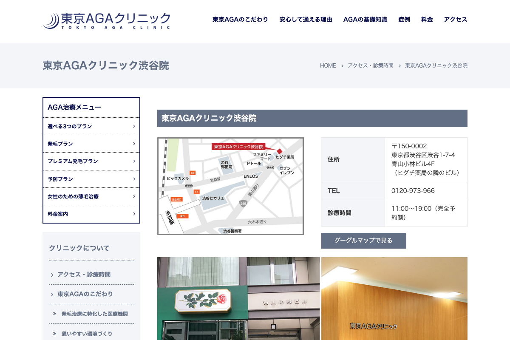
| クリニック名 | 東京AGAクリニック 渋谷院 |
|---|---|
| AGA治療薬 | フィナステリド／プロペシア ザガーロ（デュタステリド） オーダーメイドAGA処方薬（ミノキシジル＋フィナステリド＋各種ビタミン） AGAメソセラピー |
| 診察料 | カウンセリング・初診料 0円 |
| 支払い方法 | 現金・クレジットカード・医療ローン |
| 住所 | 〒150-0002 東京都渋谷区渋谷1-7-4 青山小林ビル4F |
東京AGAクリニック渋谷院は、渋谷駅から徒歩5分、渋谷1-7-4の青山小林ビル4階にある薄毛・発毛治療専門のクリニックです。渋谷を含む全国10院を展開しており、診察室・カウンセリングルームがすべて完全個室になっているため、他の患者と顔を合わせる心配がありません。
「確かな経験とノウハウをゴールまで徹底管理」を掲げており、治療の際は専門の医師が患者の希望に合ったゴールを設定。定期的な通院時には発毛効果・健康状態・治療経過の満足度を丁寧に確認するなど、患者と医師が二人三脚で治療を進めていくスタイルです。
処方薬はフィナステリドやデュタステリドに各種ビタミンなどを組み合わせたオーダーメイド処方が特徴。渋谷院は完全予約制（11:00〜19:00）のため、待ち時間が少なく効率よく通院できます。
| 予防プラン | フィナステリド 月6,600円（初回4,950円） |
|---|---|
| 発毛プラン | オーダーメイドAGA処方薬 月27,500円 |
| 診療時間 | 11:00〜19:00（完全予約制） |
| アクセス | 渋谷駅 徒歩5分 |
| オンライン診療 | 公式サイトに記載なし |
東京AGAクリニックの治療は、抜け毛を抑えるフィナステリド・プロペシア・ザガーロを入口に、ミノキシジル＋フィナステリド＋各種ビタミンを組み合わせたオーダーメイドAGA処方薬（月27,500円）で発毛を狙う構成です。一人ひとりの症状に合わせて処方内容を調整するのが大きな特徴です。
さらに発毛を加速させたい場合は、有効成分を頭皮に直接届けるAGAメソセラピー（1回66,000円）を組み合わせる選択肢もあります。完全個室・完全予約制で医師が丁寧にゴール設定と経過確認を行うため、「医師にしっかり管理してもらいたい」というニーズに応えやすい設計です。
料金は税込で、公式サイトおよびカウンセリング時の案内をもとにした目安です。オーダーメイド処方やメソセラピーは費用が大きくなりやすいため、最新の総額や条件は必ずクリニックで確認してください。
| フィナステリド | 月6,600円（初回4,950円） |
|---|---|
| プロペシア | 月7,700円 |
| ザガーロ | 月11,000円 |
| オーダーメイドAGA処方薬 | 月27,500円（ミノキ＋フィナ＋各種ビタミン） |
| AGAメソセラピー | 1回 66,000円 |
| カウンセリング・初診料 | 無料 |
渋谷院のメリットは、完全個室・完全予約制で待ち時間が少ないこと、医師がゴール設定から経過確認まで丁寧に管理してくれること、そしてオーダーメイド処方で自分の症状に合わせた治療を受けられる点です。カウンセリング・初診料が無料で、相談の入口も低めです。
一方でデメリットとして、本格的な発毛を狙うオーダーメイド処方は月27,500円、メソセラピーは1回66,000円と費用が高めです。また、オンライン診療の対応が公式サイトに明記されていないため、来院前提で通えるかを確認しておく必要があります。予防中心ならフィナステリド月6,600円から始められます。
薄毛の原因や状態を医師に丁寧に診てもらいながら、オーダーメイドの治療を受けたい人に向いているクリニックです。完全個室・完全予約制なので、人目を気にせず、待ち時間も少なく通えます。
通院イメージは、無料カウンセリングでゴール設定を行い、まずはフィナステリド（初回4,950円・月6,600円）からスタート。効果や進行度を見ながら、オーダーメイドAGA処方薬（月27,500円）やAGAメソセラピー（1回66,000円）へとステップアップしていく流れです。
「医師に二人三脚で管理してほしい」「自分の症状に合わせた処方を組んでほしい」という人には特にフィットします。一方で、とにかく薬代だけで安く続けたい人には、イースト駅前クリニックや渋谷ウエストクリニックなどシンプル系の院の方が合う場合もあります。
口コミでは「完全個室で落ち着いて相談できる」「医師が経過を丁寧に確認してくれる」「オーダーメイド処方で納得感がある」という声が中心。発毛プランは月2〜3万円規模になるため、月予算と通院期間を事前に相談して、無理のない範囲でプランを組むのがおすすめです。
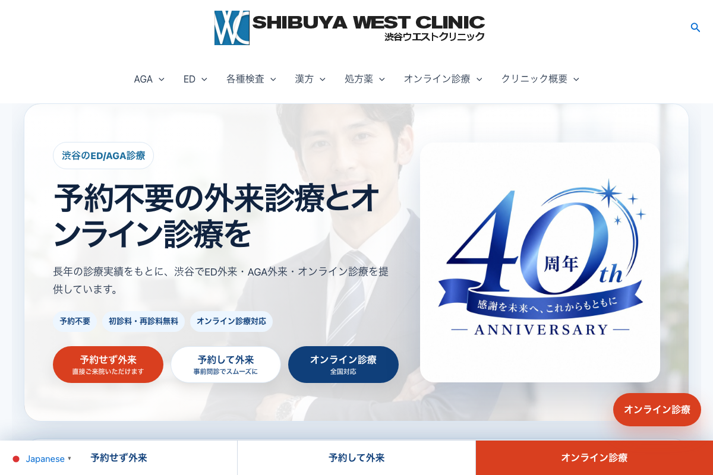
| クリニック名 | 渋谷ウエストクリニック |
|---|---|
| AGA治療薬 | フィナステリド1mg（東和薬品） プロペシア1mg（オルガノン） デュタステリド0.5mg（明治） ザガーロ0.5mg（GSK） |
| 診察料 | 0円（初診料・再診料・相談料すべて無料） |
| 支払い方法 | 現金・クレジットカード |
| 住所 | 〒150-0043 東京都渋谷区道玄坂1-5-4 照力ビル4F |
渋谷ウエストクリニックは、渋谷駅から徒歩1分、道玄坂1-5-4の照力ビル4階にあるED・AGA処方専門の外来クリニックです。創業1986年のウエストクリニックが展開しており、予約不要・保険証不要で来院できる手軽さが特徴です。
院内処方のため薬代以外の費用が発生せず、初診料・再診料・相談料がすべて無料という明快な料金体系。医師・スタッフが全員男性のため、渋谷の道玄坂エリアで人目が気になる場面でも気兼ねなく通えます。
AGA治療薬の種類が豊富で、ジェネリックから先発品まで複数メーカーの選択肢がある点も治療の柔軟性につながります。まとめ処方（13ヶ月一括）を利用すると月あたりの薬代をさらに抑えられ、年中無休・土日祝も診療しているため平日に通えない人でも安心です。オンライン診療にも対応しています。
| 予防プラン | フィナステリド1mg 28錠 3,800円 |
|---|---|
| 発毛プラン | デュタステリド0.5mg 30錠 5,000円（まとめ処方4,615円） |
| 診療時間 | 11:00〜13:00／14:00〜19:00 |
| アクセス | 渋谷駅 徒歩1分 |
| オンライン診療 | 対応 |
渋谷ウエストクリニックのAGA治療は、抜け毛を抑えるフィナステリド・デュタステリドを中心に、ジェネリックから先発品（プロペシア・ザガーロ）まで複数メーカーから選べる構成です。院内処方のため、診察を受けてその場で薬を受け取れます。
フィナステリド1mg（東和薬品）28錠が3,800円、プロペシア1mg（オルガノン）28錠が7,800円（まとめ処方7,200円）、デュタステリド0.5mg（明治）30錠が5,000円（まとめ処方4,615円）、ザガーロ0.5mg（GSK）30カプセルが10,000円（まとめ処方9,230円）。13ヶ月一括のまとめ処方を選ぶと、月あたりの薬代をさらに抑えられます。
料金は税込で、公式サイトおよび来院時の案内をもとにした目安です。薬代以外の費用が発生しない明朗会計が魅力ですが、注入治療や再生医療は扱っていません。最新の総額や条件は必ずクリニックで確認してください。
| フィナステリド1mg（東和薬品）28錠 | 3,800円 |
|---|---|
| プロペシア1mg（オルガノン）28錠 | 7,800円（まとめ処方7,200円） |
| デュタステリド0.5mg（明治）30錠 | 5,000円（まとめ処方4,615円） |
| ザガーロ0.5mg（GSK）30カプセル | 10,000円（まとめ処方9,230円） |
| 初診料・再診料・相談料 | 0円 |
渋谷院のメリットは、予約不要・保険証不要で薬代のみという手軽さと、医師・スタッフが全員男性で相談しやすい点です。院内処方なので薬局に寄る必要がなく、まとめ処方を使えば月あたりの薬代をさらに抑えられます。年中無休・土日祝も診療している点も通いやすさにつながります。
一方でデメリットとして、メソセラピーやミノキシジル内服など積極的な発毛メニューは中心ではないため、薬では物足りなくなった場合は他院との併用が必要です。あくまで「フィナステリド・デュタステリド中心で、薬代だけシンプルに続けたい人」向けのクリニックです。
余計な手間なく薬代だけでAGA治療を続けたい人、予約なしで通える手軽さを重視する人に向いているクリニックです。医師・スタッフが全員男性なので、薄毛の相談がしやすい環境です。
通院イメージは、予約なしで来院し、医師の診察を受けてその場でフィナステリド（28錠3,800円）などを受け取るだけ。13ヶ月一括のまとめ処方を選べば、月あたりの薬代をさらに抑えられ、来院頻度も減らせます。
渋谷駅徒歩1分・道玄坂という立地で、仕事の合間や帰りにふらりと立ち寄れる手軽さが最大の魅力です。年中無休・土日祝も診療しているため、平日に通えない人でも続けやすい設計になっています。オンライン診療にも対応しているので、来院が難しい月は切り替えも可能です。
口コミでは「予約不要で待ち時間が少ない」「全員男性スタッフで相談しやすい」「薬代だけで分かりやすい」という声が中心。先発品からジェネリックまで選べる柔軟性も評価されています。注入治療まで考えるなら他院、薬中心ならウエスト、という選び分けが現実的です。
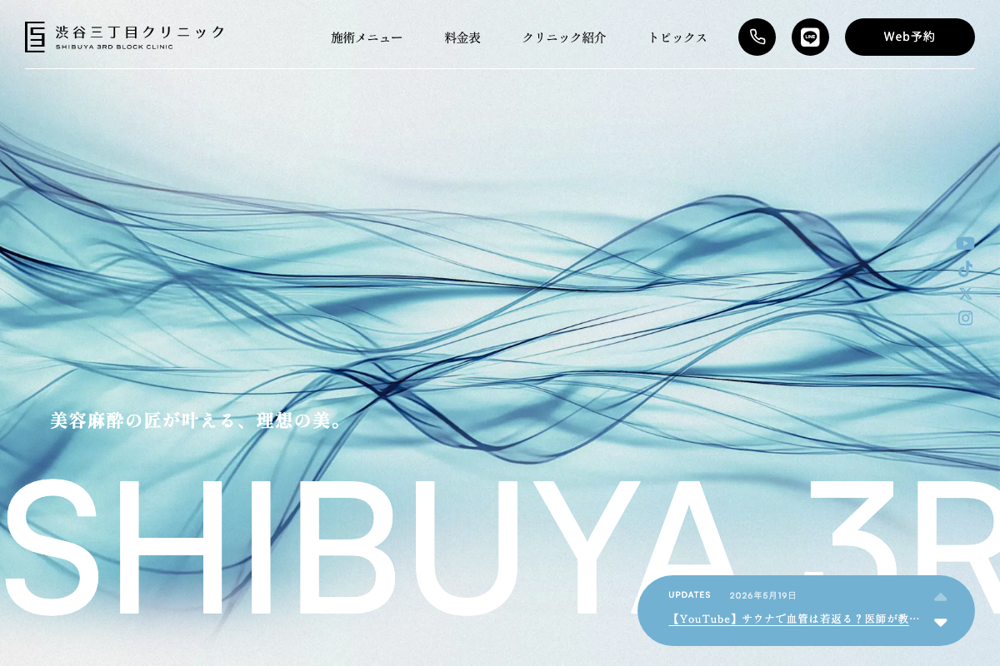
| クリニック名 | 渋谷三丁目クリニック |
|---|---|
| AGA治療薬 | フィナステリド1mg デュタステリド0.5mg 外用薬ヴェラルティス7% ミノキシジルタブレット5mg／頭皮注入治療／毛髪再生療法 |
| 診察料 | 要確認 |
| 支払い方法 | 現金・クレジットカード |
| 住所 | 〒150-0002 東京都渋谷区渋谷3-18-8 大野ビル6F |
渋谷三丁目クリニックは、渋谷駅から徒歩1分、渋谷3-18-8の大野ビル6階にある男性専門クリニックです。医療脱毛・AGA・ED治療などを提供しており、男性専門院のため他の患者の目を気にせず薄毛を相談しやすい環境が整っています。
フィナステリド28錠3,800円（税込）から始められる内服薬のほか、外用薬や頭皮への注入治療、幹細胞培養上清液を使った毛髪再生療法まで、幅広いラインナップを用意しているのが特徴です。
予防段階で内服だけ試したい人から、より積極的な治療を検討している人まで対応できる構成で、途中からメニューを追加することもできます。平日・土日とも夜20時まで診療しているため仕事帰りに通いやすく、オンライン診療にも対応しています。木曜・祝日が休診のため、来院前にスケジュールを確認しておくのがおすすめです。
| 予防プラン | フィナステリド1mg 28錠 3,800円 |
|---|---|
| 発毛プラン | ミノキシジルタブレット5mg 30錠 8,000円／注入治療あり |
| 診療時間 | 月火水金11:00〜14:00／15:00〜20:00、土日10:30〜（木曜・祝日休診） |
| アクセス | 渋谷駅 徒歩1分 |
| オンライン診療 | 対応 |
渋谷三丁目クリニックの治療は、抜け毛を抑えるフィナステリド・デュタステリドを入口に、外用薬ヴェラルティス7%、ミノキシジルタブレット5mg、さらに頭皮への注入治療や幹細胞培養上清液を使った毛髪再生療法まで、段階的にメニューを選べる構成です。
フィナステリド1mgは28錠3,800円／140錠18,000円、デュタステリド0.5mgは30カプセル6,500円／150カプセル31,000円と、まとめ買いで単価を抑えられます。外用薬ヴェラルティス7%（60ml 1本）8,800円、ミノキシジルタブレット5mg 30錠8,000円など、内服・外用・注入を組み合わせて進行度に合わせた治療を構築できます。
料金は税込で、公式サイトおよびカウンセリング時の案内をもとにした目安です。診察料は要確認のため、初回問い合わせ時に確認しておくとよいでしょう。最新の総額や条件は必ずクリニックで確認してください。
| フィナステリド1mg | 28錠3,800円／140錠18,000円 |
|---|---|
| デュタステリド0.5mg | 30カプセル6,500円／150カプセル31,000円 |
| 外用薬ヴェラルティス7%（60ml） | 8,800円／1本 |
| ミノキシジルタブレット5mg 30錠 | 8,000円 |
| 頭皮注入治療・毛髪再生療法 | 要確認（カウンセリング時案内） |
渋谷院のメリットは、内服から注入・再生療法まで段階的に選べる幅の広さと、男性専門院ならではの相談しやすさ、そして平日・土日とも夜20時まで診療している通いやすさです。フィナステリド28錠3,800円という入口価格も、予防から始めたい人に向いています。
一方でデメリットとして、診察料が要確認のため総額が読みにくい点と、木曜・祝日が休診のため通院日が限られる点があります。注入治療や毛髪再生療法は費用が大きくなりやすいので、どこまで治療を進めるかを最初に相談して、予算感を擦り合わせておくと安心です。
脱毛の進行具合に合わせて内服薬から注入治療まで段階的に相談しながら進めたい人に向いているクリニックです。男性専門なので、薄毛の悩みを気兼ねなく相談できます。
通院イメージは、まずフィナステリド（28錠3,800円）など内服薬からスタートし、効果や進行度を見ながらミノキシジルタブレットや外用薬を追加。さらに積極的に攻めたい場合は頭皮注入治療や毛髪再生療法へとステップアップする流れです。
「予防だけでなく、将来的には注入治療や再生療法も視野に入れたい」という人には、1院で段階的に治療を進められるのが大きなメリットです。平日・土日とも20時まで診療しているため、仕事帰りでも通いやすい設計になっています。
口コミでは「男性専門で相談しやすい」「内服から注入まで選べて柔軟」「渋谷駅から近い」という声が中心。木曜・祝日が休診なので、通院できる曜日を事前に確認しておくとスムーズです。注入治療まで踏み込む場合は、1回あたりの費用と推奨回数をカウンセリングで確認しておきましょう。
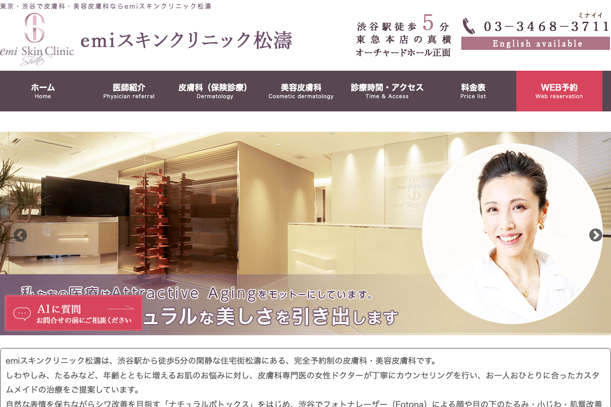
| クリニック名 | emiスキンクリニック松濤 |
|---|---|
| AGA治療薬 | ザガーロ0.5mg（男性AGA向け） 女性の薄毛・抜け毛向け薬 シミ・シワ・ニキビなど美容皮膚科メニュー併設 |
| 診察料 | 初診3,300円／再診1,100円 |
| 支払い方法 | 現金・クレジットカード |
| 住所 | 〒150-0046 東京都渋谷区松濤1-7-10-101 |
emiスキンクリニック松濤は、JR渋谷駅ハチ公口から徒歩5分、松濤1-7-10にある皮膚科・美容皮膚科クリニックです。保険診療の皮膚科と女性向けの美容皮膚科があり、AGAについては男性AGAと女性の薄毛・抜け毛の両方に対応しています。
皮膚科医の女性院長による診察で、AGAの治療に加え、シミやシワ・ニキビなど肌全体の悩みを一か所で相談できる環境が整っているのが特徴です。完全予約制・個室の診察室で他の患者と顔を合わせにくく、渋谷の繁華街から少し外れた閑静な松濤エリアの立地も、通院時の人目が気になりにくい点として判断材料になります。
男性向けAGAではザガーロ（内服）を取り扱い、女性の薄毛向け薬も用意。「皮膚科医にきちんと診てもらいたい」「肌の悩みもまとめて相談したい」という人に向いています。オンライン診療にも対応しています。
| 男性AGA | ザガーロ0.5mg 30日分 11,000円 |
|---|---|
| 女性の薄毛 | 女性向け薬を用意（女性医師が診察） |
| 診療時間 | 診療カレンダーを参照 |
| アクセス | JR渋谷駅ハチ公口 徒歩5分 |
| オンライン診療 | 対応 |
emiスキンクリニック松濤の薄毛治療は、皮膚科医である女性院長が診察を担当するのが大きな特徴です。男性AGAにはザガーロ0.5mg（30日分11,000円）を処方し、女性の薄毛・抜け毛には別の薬剤を用意するなど、男女それぞれに合わせた治療を提供しています。
皮膚科クリニックならではの強みは、AGA以外の肌トラブルも同時に相談できる点です。シミ・シワ・ニキビなどの美容皮膚科メニューを併設しているため、薄毛と肌の悩みを一か所でまとめてケアしたい人にフィットします。完全予約制・個室診療でプライバシーにも配慮されています。
料金は税込で、公式サイトおよびカウンセリング時の案内をもとにした目安です。初診3,300円・再診1,100円の診察料がかかる点、診療時間は診療カレンダーで確認が必要な点に注意してください。最新の総額や条件は必ずクリニックで確認しましょう。
| ザガーロ0.5mg（男性AGA） | 30日分 11,000円 |
|---|---|
| 女性の薄毛向け薬 | 要確認（女性医師が診察のうえ案内） |
| 初診料 | 3,300円 |
| 再診料 | 1,100円 |
松濤院のメリットは、皮膚科の女性医師が男女の薄毛に対応している点と、シミ・シワ・ニキビなど肌全体の悩みを一か所で相談できる点です。完全予約制・個室診療で、繁華街から外れた松濤エリアという立地もプライバシー配慮につながります。
一方でデメリットとして、初診3,300円・再診1,100円の診察料がかかるため、薬代だけのシンプル系クリニックと比べると総額がやや高くなります。また、男性AGAの内服はザガーロ中心のため、フィナステリドやミノキシジル内服を希望する場合は事前確認が必要です。注入治療は中心ではありません。
男女問わず皮膚科医師による丁寧な診察を受けたい人、AGA以外のスキンケアもまとめて相談したい人に向いているクリニックです。女性医師が診察するため、女性の薄毛相談にも安心して通えます。
通院イメージは、初診（3,300円）で女性院長の診察を受け、男性ならザガーロ0.5mg（30日分11,000円）、女性なら専用薬を処方してもらう流れ。肌の悩みがあれば、同じ受診のなかで美容皮膚科メニューも相談できます。
「皮膚科医にきちんと診てもらいたい」「薄毛だけでなく肌全体をケアしたい」「女性医師の方が相談しやすい」という人に特にフィットします。一方で、とにかく薬代だけで安くという人には、診察料無料のシンプル系クリニックの方が合う場合もあります。
口コミでは「女性医師で相談しやすい」「肌の悩みも一緒に診てもらえる」「松濤の落ち着いた立地で通いやすい」という声が中心。男女ともに通える数少ない皮膚科ベースのクリニックなので、夫婦・カップルで相談したい場合にも選びやすい選択肢です。
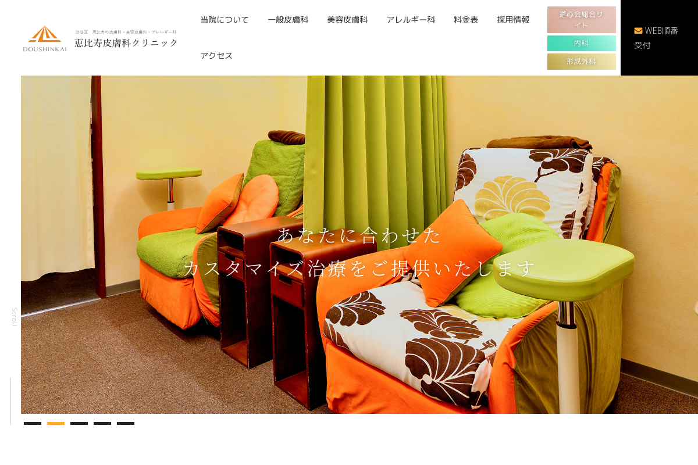
| クリニック名 | 恵比寿皮膚科クリニック |
|---|---|
| AGA治療薬 | フィナステリド／プロペシア デュタステリド0.5mg ミノキシジル0.5mg カルプロニウム（外用） |
| 診察料 | 要確認 |
| 支払い方法 | 現金・クレジットカード |
| 住所 | 〒150-0022 東京都渋谷区恵比寿南1-1-1 ヒューマックスビル4F |
恵比寿皮膚科クリニックは、JR恵比寿駅西口から徒歩1分、恵比寿南1-1-1のヒューマックスビル4階にある皮膚科・美容皮膚科クリニックです。フィナステリド1錠175円（税込）という1錠単位の明確な料金で、月々にかかる費用の見通しが立てやすくなっています。
フィナステリド・デュタステリド・ミノキシジルに加えて、カルプロニウム（外用）も取り扱っており、局所的な血管拡張作用で毛嚢や毛包への血流を増加させる選択肢があります。内服薬に抵抗がある場合の代替手段としても検討できます。
女性の薄毛相談にも対応しており、男女ともに受診できるのが特徴です。恵比寿・代官山・渋谷周辺に職場や生活圏がある人に通いやすい立地。日曜・月曜・祝日が休診で土曜は午前のみのため、通院できる曜日を事前に確認しておくと安心です。
| 予防プラン | フィナステリド 1錠175円 |
|---|---|
| 発毛プラン | ミノキシジル0.5mg 1錠130円／カルプロニウム外用 |
| 診療時間 | 火〜金10:00〜12:45／15:00〜19:00、土10:00〜13:45（日・月・祝休診） |
| アクセス | JR恵比寿駅西口 徒歩1分 |
| オンライン診療 | 公式サイトに記載なし |
恵比寿皮膚科クリニックの治療は、抜け毛を抑えるフィナステリド（1錠175円）・デュタステリド（1錠220円）を入口に、ミノキシジル（1錠130円）、さらに外用のカルプロニウムまで選べる構成です。1錠単位の明確な料金設定で、必要な分だけ無理なく続けられます。
皮膚科クリニックならではの強みは、カルプロニウム外用という選択肢があること。内服薬に抵抗がある人や、内服と外用を組み合わせたい人に向いています。女性の薄毛相談にも対応しているため、男女ともに皮膚科医の診察を受けられます。
料金は税込で、公式サイトおよび来院時の案内をもとにした目安です。診察料は要確認、日曜・月曜・祝日が休診で土曜は午前のみのため、通院できる曜日を事前に確認しておくとスムーズです。最新の総額や条件は必ずクリニックで確認してください。
| フィナステリド | 175円/1錠 |
|---|---|
| プロペシア | 275円/1錠 |
| デュタステリド0.5mg | 220円/1錠 |
| ザガーロ0.5mg | 330円/1錠 |
| ミノキシジル0.5mg | 130円/1錠 |
恵比寿院のメリットは、フィナステリド1錠175円という1錠単位の明確な料金と、恵比寿駅西口徒歩1分という通いやすさです。カルプロニウム外用という代替選択肢があるため、内服に抵抗がある人でも治療を始めやすいのが特徴です。
一方でデメリットとして、診察料が要確認のため総額が読みにくい点と、日曜・月曜・祝日が休診で土曜は午前のみという診療日の制約があります。注入治療や再生医療は中心ではないため、薬と外用中心でシンプルに続けたい人向けのクリニックです。
余計なコストをかけず、シンプルに薬代だけでAGA治療を始めたい人、恵比寿・代官山・渋谷周辺に職場や生活圏がある人に向いているクリニックです。1錠175円から始められる明確な料金が魅力です。
通院イメージは、皮膚科医の診察を受けてフィナステリド（1錠175円）を処方してもらい、必要に応じてミノキシジルやカルプロニウム外用を追加する流れ。1錠単位なので、必要な分だけ無理なく続けられます。
恵比寿駅西口徒歩1分という立地は、恵比寿・代官山・青山方面に住む人や職場がある人にとって、渋谷駅前よりむしろ通いやすい選択肢です。皮膚科ベースなので、内服に抵抗がある場合のカルプロニウム外用という選択肢があるのも安心材料です。
口コミでは「1錠単位で料金が明確」「恵比寿駅から近い」「皮膚科医に診てもらえて安心」という声が中心。日曜・月曜・祝日が休診で土曜午前のみなので、通院できる曜日を事前に確認しておくのがおすすめです。注入治療まで考えるなら他院との併用を検討しましょう。
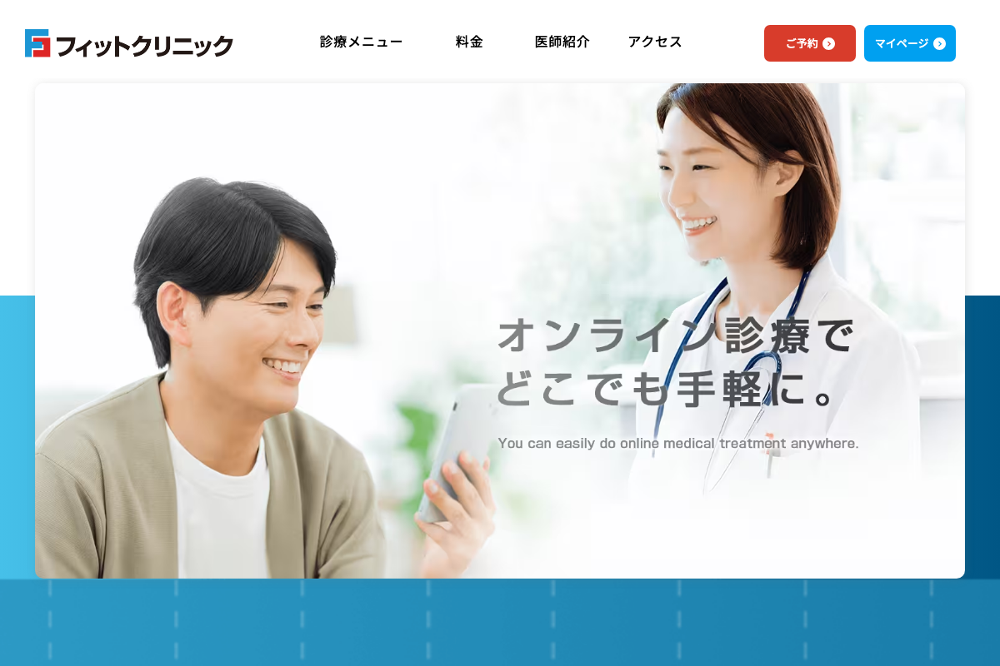
| クリニック名 | フィットクリニック 渋谷笹塚院 |
|---|---|
| AGA治療薬 | フィナステリド1mg（海外製） デュタステリド0.5mg（海外製） フィナステリド＋ミノキシジルタブレット5mg |
| 診察料 | 0円（自己都合キャンセルは3,000円） |
| 支払い方法 | 現金・クレジットカード |
| 住所 | 〒151-0073 東京都渋谷区笹塚1-30-3 ビラージュ笹塚Ⅲ 5階 |
フィットクリニック渋谷笹塚院は、京王線笹塚駅から徒歩2分、笹塚1-30-3のビラージュ笹塚Ⅲ5階にあるクリニックです。AGA・FAGAの診療はオンライン診療での対応が可能で、来院なしで診察してもらえて薬は自宅に配送される仕組みです。
料金は公式サイトで全プランが確認でき、フィナステリド（1mg）は1ヶ月ごとの定期配送で3,000円（税込）のほか、ミノキシジルタブレットとの組み合わせプランも用意されています。6ヶ月分の定期配送では単価がさらに下がるため、長期的に続けることを前提に比較する人にぴったりです。
診察料は基本無料で、医師の判断により処方できない場合も診察料はかかりません。定期配送に対応し、継続的な治療を続けやすい仕組みが整っています。海外製薬剤を使用しているため、厚生労働省承認薬との違いを事前に確認した上で判断することが重要です。
| 予防プラン | フィナステリド1mg（海外製）月3,500円（定期3,000円） |
|---|---|
| 発毛プラン | フィナ＋ミノキタブレット5mg 月7,600円（定期4,700円） |
| 診療時間 | 月〜土10:00〜13:50／15:00〜19:50、日祝10:00〜13:50／15:00〜17:50 |
| アクセス | 京王線笹塚駅 徒歩2分 |
| オンライン診療 | 対応（自宅配送） |
フィットクリニックの治療は、抜け毛を抑えるフィナステリド・デュタステリド（いずれも海外製）を入口に、フィナステリド＋ミノキシジルタブレット5mgの組み合わせで発毛を狙う構成です。オンライン診療＋自宅配送が基本なので、通院の手間を最小化できます。
フィナステリド1mgは月3,500円（定期3,000円）、デュタステリド0.5mgは月4,500円（定期4,000円）、フィナステリド＋ミノキシジルタブレット5mgは月7,600円（定期4,700円）。定期配送を選ぶと単価が下がるため、長期継続を前提にすると割安です。6ヶ月分の定期配送ではさらに単価が下がります。
料金は税込で、公式サイトおよびオンライン診察時の案内をもとにした目安です。海外製薬剤を使用しているため、厚生労働省承認薬との違いを事前に確認した上で判断してください。最新の総額や条件は必ずクリニックで確認しましょう。
| フィナステリド1mg（海外製） | 月3,500円（定期3,000円） |
|---|---|
| デュタステリド0.5mg（海外製） | 月4,500円（定期4,000円） |
| フィナ＋ミノキタブレット5mg | 月7,600円（定期4,700円） |
| 診察料 | 0円（自己都合キャンセルは3,000円） |
笹塚院のメリットは、オンライン診療＋自宅配送で通院不要という手軽さと、定期配送で単価を抑えられる料金設計です。診察料は基本無料で、処方できない場合もかからないため、まず相談だけしてみたい人にも入りやすい設計です。
一方でデメリットとして、海外製薬剤を使用している点があります。厚生労働省承認薬との違いや医薬品副作用被害救済制度の対象可否について、診察時に確認したうえで判断する必要があります。また、注入治療や対面での頭皮チェックは中心ではないため、薬中心でオンライン完結したい人向けのクリニックです。
クリニックへの通院が難しく、スマホで手軽にAGA治療を始めたい人、薬代を抑えながら長期で続けたい人に向いているクリニックです。オンライン診療＋自宅配送なので、忙しくて通院時間が取れない人でも続けられます。
通院イメージは、スマホでオンライン診察を受け、フィナステリド（定期3,000円）などを自宅に配送してもらう流れ。定期配送を選べば毎月の手続きも自動化され、6ヶ月分まとめると単価がさらに下がります。
「通院時間が取れない」「人に会わずに治療を続けたい」「薬代をとにかく抑えたい」という人に特にフィットします。海外製薬剤を使う点は、国内承認薬で続けたい人には向かないため、安全性のスタンスを最初に確認しておくと安心です。
口コミでは「通院不要で続けやすい」「定期配送で単価が安い」「診察料がかからない」という声が中心。長期継続を前提にした定期配送の割引が大きいので、まず3〜6ヶ月続けてみる前提で比較すると割安感が出やすいクリニックです。
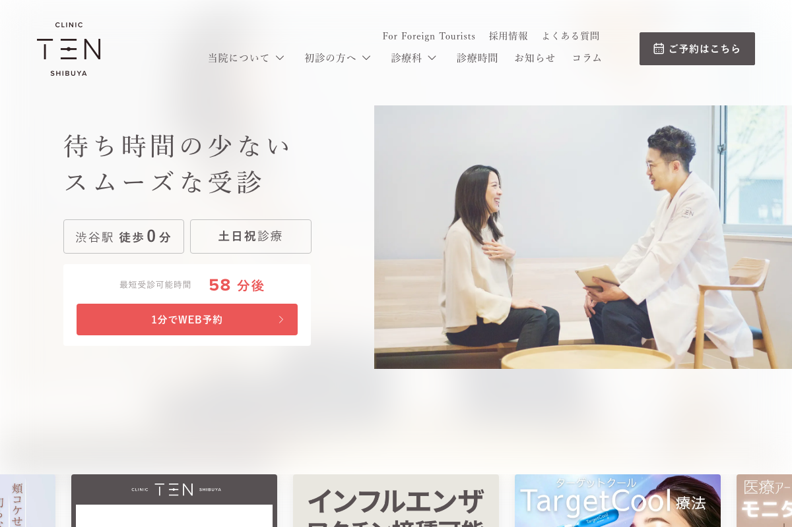
| クリニック名 | クリニックTEN渋谷 |
|---|---|
| AGA治療薬 | フィナステリド錠1mg デュタステリドカプセル0.5mg ミノキシジル外用2%／5% |
| 診察料 | 初診カウンセリング2,750円／初回検査2,750円／再診1,100円 |
| 支払い方法 | 現金・クレジットカード |
| 住所 | 〒150-0002 東京都渋谷区渋谷2-20-12 日永ビル2F |
クリニックTEN渋谷は、渋谷駅B4出口から徒歩1分以内の宮益坂沿いにある、内科・皮膚科など幅広い診療科を持つクリニックです。完全WEB予約制で待ち時間がほぼ発生せず、薄毛治療のためだけに来院している印象を持たれにくい点も特徴です。
初診では初診カウンセリング2,750円（税込）と血液検査2,750円（税込）が必要で、PSA・肝機能・尿沈渣の検査結果をもとに処方を開始する方針をとっています。投薬開始から2〜4週間後にも血液検査を行い、肝臓に異常が起きていないかを確認するなど、安全性を重視した運用です。
治療内容と副作用についての説明を丁寧に行うことをクリニックが方針として明示しており、納得してから治療を始めたい人に向いています。月曜は22時まで・年中無休で診療し、男女ともに対応。女性の薄毛もミノキシジル外用薬を低濃度から相談できます。
| 予防プラン | フィナステリド錠1mg 28錠 7,700円 |
|---|---|
| 発毛プラン | ミノキシジル外用5%（60ml）11,000円 |
| 診療時間 | 月9:00〜22:00、火〜金9:00〜19:00、土日祝9:00〜18:00（年中無休） |
| アクセス | 渋谷駅B4出口 徒歩1分以内 |
| オンライン診療 | 公式サイトに記載なし |
クリニックTEN渋谷の治療は、抜け毛を抑えるフィナステリド錠1mg（28錠7,700円）・デュタステリドカプセル0.5mg（30カプセル8,800円）を入口に、発毛を促すミノキシジル外用2%（60ml 8,800円）・5%（60ml 11,000円）を組み合わせる構成です。
最大の特徴は、血液検査を重視した安全管理です。初回はPSA・肝機能・尿沈渣の検査結果をもとに処方を開始し、投薬開始2〜4週間後にも肝機能をチェック。再診は2〜3ヶ月に1回を目安とし、定期的なフォローアップ検査（1,100円）も行うため、副作用が心配な人でも安心して続けられます。
料金は税込で、公式サイトおよびカウンセリング時の案内をもとにした目安です。初診時にカウンセリング・検査費用がかかる点を踏まえて総額を確認してください。最新の総額や条件は必ずクリニックで確認しましょう。
| フィナステリド錠1mg 28錠 | 7,700円 |
|---|---|
| デュタステリドカプセル0.5mg 30カプセル | 8,800円 |
| ミノキシジル外用2%（60ml） | 8,800円 |
| ミノキシジル外用5%（60ml） | 11,000円 |
| 初診カウンセリング・初回検査 | 各2,750円 |
| 再診料・フォローアップ検査 | 各1,100円 |
渋谷院のメリットは、血液検査を重視した安全管理と、副作用についての丁寧な説明、そして完全WEB予約制で待ち時間がほぼない点です。月曜22時まで・年中無休という診療時間も、仕事帰りに通いたい人に向いています。
一方でデメリットとして、初診カウンセリング2,750円・初回検査2,750円・再診1,100円と診察関連の費用が発生するため、薬代だけのシンプル系クリニックと比べると総額がやや高くなります。ただし、これは安全管理を重視した結果でもあるため、副作用を心配する人にはむしろ安心材料になります。
副作用や薬の仕組みについて医師からしっかり説明を受けてから、納得した上でAGA治療を始めたい人に向いているクリニックです。血液検査を重視し、肝機能を継続的にチェックする運用は、安全性を重視する人に安心感を与えます。
通院イメージは、完全WEB予約で来院し、初診カウンセリング＋血液検査（各2,750円）を受けてから処方を開始。投薬2〜4週間後と、その後2〜3ヶ月に1回のペースで肝機能をフォローしながら継続する流れです。
「副作用が心配」「薬の仕組みを理解してから始めたい」「血液検査でしっかり管理してほしい」という慎重派の人に特にフィットします。一方で、とにかく安く薬だけという人には、診察料無料のシンプル系クリニックの方が合う場合もあります。
口コミでは「説明が丁寧で納得して始められた」「血液検査でしっかり管理してくれる」「WEB予約で待ち時間が少ない」という声が中心。内科・皮膚科を併設しているため、AGA以外の体調相談もしやすいのが特徴です。男女ともに対応しているので、女性の薄毛相談にも使えます。
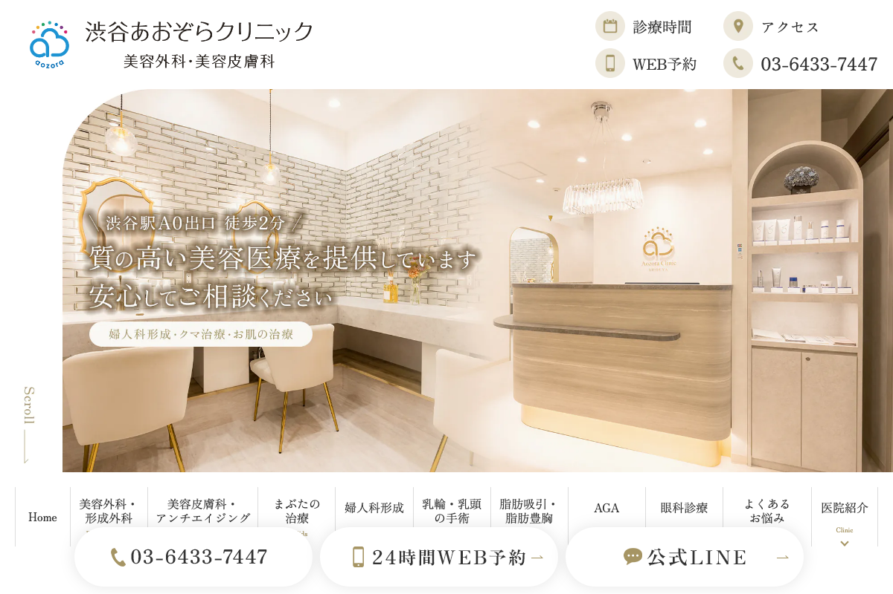
| クリニック名 | 渋谷あおぞらクリニック 美容外科・美容皮膚科 |
|---|---|
| AGA治療薬 | AGAタブレットセット（男性用） ミノキシジル＋フィナステリド合剤 ミノキシジル配合外用液5% メソセラピー／エクソソーム導入 |
| 診察料 | 要確認 |
| 支払い方法 | 現金・クレジットカード・医療ローン |
| 住所 | 〒150-0043 東京都渋谷区道玄坂2-28-4 井門ビル6F |
渋谷あおぞらクリニック 美容外科・美容皮膚科は、渋谷駅A0出口から徒歩1分、道玄坂2-28-4の井門ビル6階にある美容外科・美容皮膚科クリニックです。2024年5月に開院し、AGA治療は内服・外用・メソセラピー・エクソソーム導入と複数の選択肢を持っています。
内服薬はAGAタブレットセット（男性用）1ヶ月分14,850円（税込）から、外用薬はミノキシジル配合外用液5% 1本5,500円（税込）から案内。男性AGA・女性の薄毛ともに診療でき、男女ともに相談しやすい環境です。
渋谷の道玄坂エリアに立地し、A0出口からの近さもあって帰宅途中に立ち寄りやすい立地です。土日も診療を行っており、診療カレンダーは公式サイトで確認できます。美容全般を手掛けるクリニックのため、AGA治療と併せて肌や体型など複合的なケアを考えている人にも相談しやすい環境です。
| 予防・発毛プラン | AGAタブレットセット（男性用）1ヶ月 14,850円 |
|---|---|
| 注入治療 | メソセラピー1回32,780円／エクソソーム導入1回54,780円 |
| 診療時間 | 診療カレンダー参照（土日も診療） |
| アクセス | 渋谷駅A0出口 徒歩1分 |
| オンライン診療 | 公式サイトに記載なし |
渋谷あおぞらクリニックの治療は、抜け毛抑制と発毛促進を1つにまとめたAGAタブレットセット（男性用）1ヶ月14,850円やミノキシジル＋フィナステリド合剤（10,890円）を入口に、ミノキシジル配合外用液5%（1本5,500円）、さらにメソセラピー・エクソソーム導入まで幅広く選べる構成です。
最大の特徴は、内服薬だけでなく注入治療まで選択肢が広いこと。メソセラピー（メソラインヘア）1回32,780円、エクソソーム導入1回54,780円といった先進的な注入治療まで対応しているため、薬では物足りなくなった場合も同じ院でステップアップできます。女性用ミノキシジル配合外用液（1%）やパントガールなど、女性の薄毛にも対応しています。
料金は税込で、公式サイトおよびカウンセリング時の案内をもとにした目安です。診察料は要確認、診療時間は診療カレンダーで確認が必要です。注入治療は費用が大きくなりやすいため、最新の総額や条件は必ずクリニックで確認してください。
| ミノキシジル配合外用液5% 1本 | 5,500円 |
|---|---|
| AGAタブレットセット（男性用）1ヶ月 | 14,850円 |
| ミノキシジル＋フィナステリド合剤 | 10,890円 |
| メソセラピー（メソラインヘア）1回 | 32,780円 |
| エクソソーム導入 1回 | 54,780円 |
| 女性用ミノキシジル配合外用液1% 1本／パントガール | 各5,500円／10,890円 |
渋谷院のメリットは、内服・外用から注入治療（メソセラピー・エクソソーム）まで選択肢が広いこと、男女ともに対応していること、そして渋谷駅A0出口徒歩1分・土日も診療という通いやすさです。美容全般を手掛けるため、肌や体型のケアもまとめて相談できます。
一方でデメリットとして、診察料が要確認のため総額が読みにくい点と、AGAタブレットセットが月14,850円、注入治療は1回3〜5万円台と費用が高めな点があります。注入治療は複数回受けることが推奨されるため、コース契約の前に1回あたりの金額と推奨回数を確認しておくと安心です。
内服薬だけでなく注入治療まで選択肢を広げたい人、男女問わず渋谷エリアで薄毛を相談したい人に向いているクリニックです。メソセラピーやエクソソーム導入まで対応しているため、本格的な発毛を狙う人にもフィットします。
通院イメージは、まずAGAタブレットセット（月14,850円）や外用薬（1本5,500円）からスタートし、効果や進行度を見ながらメソセラピー（1回32,780円）やエクソソーム導入（1回54,780円）を併用していく流れ。1院で薬物治療から注入治療まで完結できます。
「薬では頭打ちで、注入治療や先進的な発毛治療も試したい」という人には、1院で段階的にステップアップできるのが大きなメリットです。美容皮膚科ベースなので、AGA以外の肌・体型の悩みも同時に相談できます。
口コミでは「注入治療まで選べて本格的」「男女ともに通える」「渋谷駅から近く土日も診療」という声が中心。2024年開院の新しいクリニックなので、設備がきれいな点も評価されています。注入治療は費用が大きいため、コース契約の前に総額シミュレーションを作ってから判断するのがおすすめです。
渋谷でAGA治療を続けるうえで最も大切なのは、「通い続けられるかどうか」です。AGA治療は内服薬・外用薬を3〜6ヶ月以上続けて初めて効果が判断できるため、料金の安さだけでなく、駅からの近さ・診療時間・診察料の有無・オンライン対応まで含めて比較するのが失敗しにくいコツです。
ここでは、渋谷のAGAクリニックを選ぶときに押さえておきたい3つの視点を整理します。自分のライフスタイルに合った軸で候補を絞っていきましょう。
渋谷エリアは渋谷駅から徒歩1〜5分以内にクリニックが集中しており、仕事帰りや昼休みに立ち寄りやすいのが特徴です。AGAスキンクリニック渋谷駅前院・スマイルAGAクリニック渋谷・イースト駅前クリニック渋谷院・渋谷ウエストクリニック・クリニックTEN渋谷などは、いずれも渋谷駅から徒歩1分前後の好立地です。
診療時間も重要な比較軸です。AGAスキンクリニック渋谷駅前院は10:00〜22:00で年中無休、スマイルAGAクリニック渋谷は水曜22時まで、クリニックTEN渋谷は月曜22時まで・年中無休と、仕事帰りに通いやすい長時間営業の院が複数あります。一方、東京AGAクリニック渋谷院（11:00〜19:00完全予約制）や恵比寿皮膚科クリニック（日・月・祝休診）のように診療時間が限られる院もあるため、自分の生活リズムに合うかを事前に確認しておきましょう。
平日夜しか動けない人は、22時まで診療しているAGAスキンクリニック渋谷駅前院・クリニックTEN渋谷（月曜）・スマイルAGAクリニック渋谷（水曜）が現実的な候補です。土日祝も通いたい人は、イースト駅前クリニック渋谷院（土日祝10:00〜18:00）・渋谷ウエストクリニック（年中無休）・フィットクリニック渋谷笹塚院（日祝も診療）が向いています。「自分が通える曜日・時間に開いているか」を最初に確認すると、候補を効率よく絞れます。
AGAクリニックを比較するときに見落としがちなのが、薬代以外の費用です。月額の薬代が安く見えても、初診料・再診料・血液検査料が別途かかると、トータルでは割高になることがあります。
渋谷エリアでは、イースト駅前クリニック渋谷院・渋谷ウエストクリニック・フィットクリニック渋谷笹塚院などが診察料0円で薬代のみ。一方、emiスキンクリニック松濤（初診3,300円・再診1,100円）やクリニックTEN渋谷（初診カウンセリング2,750円＋初回検査2,750円）のように、診察・検査費用がかかる院もあります。これらは安全管理や皮膚科診察の対価でもあるため、単純な高い・安いではなく、「何にお金を払っているか」で判断するのが現実的です。
料金は「1年続けたときの総額」で比較すると失敗しにくくなります。例えば、フィナステリド単剤を1年続けるなら、恵比寿皮膚科クリニック（1錠175円）やゴリラクリニック（海外承認薬月3,000円）、フィットクリニック（定期3,000円）が割安。発毛プランまで含めるなら、AGAスキンクリニックのはじめて発毛プラン（月16,800円）で年間20万円前後、注入治療まで入れると年間数十万円規模になります。月単位の数字ではなく、診察料・検査料・オンライン送料まで含めた年間総額で見積もるのがおすすめです。
通院の負担を減らしたいなら、オンライン診療への対応も比較軸に加えましょう。渋谷エリアでは、AGAスキンクリニック渋谷駅前院・スマイルAGAクリニック渋谷・ゴリラクリニック・イースト駅前クリニック渋谷院・渋谷ウエストクリニック・渋谷三丁目クリニック・emiスキンクリニック松濤・フィットクリニック渋谷笹塚院などがオンライン診療に対応しています。
特にフィットクリニック渋谷笹塚院はオンライン診療＋自宅配送が基本で、通院ゼロで治療を続けられます。「最初は対面で頭皮チェック、その後はオンラインで継続」というハイブリッド運用を選べば、忙しい人でも無理なく続けられます。予約方法も、完全WEB予約のクリニックTEN渋谷から予約不要の渋谷ウエストクリニック・イースト駅前クリニックまで幅があるため、自分の通い方に合う予約スタイルを選びましょう。
渋谷でAGAクリニックを選ぶとき、治療内容と同じくらい「どのエリアにあるか」が通いやすさを左右します。渋谷区内は大きく分けて「渋谷駅周辺」「神泉・道玄坂」「表参道・恵比寿」の3エリアにクリニックが集まっており、それぞれ立地の特性が異なります。
通勤・通学の動線に近いか、人目が気になる場所かどうかも、長期治療を続けるうえで意外と重要な要素です。自分の生活リズムに合ったエリアを基準に、候補を絞っていきましょう。
渋谷駅から徒歩1〜5分以内にクリニックが集中しているエリアで、仕事帰りや昼休みに立ち寄りやすいのが最大の魅力です。AGAスキンクリニック渋谷駅前院（道玄坂2-3-1・徒歩1分）、スマイルAGAクリニック渋谷（渋谷1-17-14・徒歩1分）、イースト駅前クリニック渋谷院（神南1-23-7・ハチ公口徒歩1分）、東京AGAクリニック渋谷院（渋谷1-7-4・徒歩5分）、クリニックTEN渋谷（渋谷2-20-12・B4出口徒歩1分以内）がこのエリアに位置します。
渋谷駅周辺は繁華街に近いぶん人通りが多いため、「クリニックへの出入りを人に見られたくない」と感じる人は、完全個室・完全予約制の院を選ぶのが安心です。AGAスキンクリニック渋谷駅前院や東京AGAクリニック渋谷院は、カウンセリングから会計まで個室対応で、プライバシーへの配慮を求める人にも選ばれやすい設計になっています。
道玄坂から神泉にかけては、渋谷の繁華街とは異なる落ち着いた雰囲気のエリアです。渋谷駅から徒歩4〜5分程度で到達でき、クリニックへの行き来が目立ちにくい立地が多いのが特徴です。
ゴリラクリニック渋谷道玄坂院（道玄坂2-11-1・A0出口徒歩4分）は男性専門の総合美容クリニックで、AGA治療のほかヒゲ脱毛なども対応。渋谷ウエストクリニック（道玄坂1-5-4・徒歩1分）も医師・スタッフが全員男性で、人目が気になる場面でも気兼ねなく通えます。渋谷あおぞらクリニック（道玄坂2-28-4・A0出口徒歩1分）は内服から注入治療まで幅広く対応する美容皮膚科で、男性専門院や駅近院を探したい人に向いたエリアです。
表参道・恵比寿エリアは渋谷区内に位置しながら、落ち着いた雰囲気のなかでAGA治療を受けられる環境が整っています。各線の恵比寿駅・表参道駅に近いため、青山や代官山方面に住む人や職場がそのエリアにある人には、渋谷駅前よりむしろ通いやすい場合があります。
恵比寿皮膚科クリニック（恵比寿南1-1-1・恵比寿駅西口徒歩1分）は、フィナステリド1錠175円から始められる皮膚科で、男女ともに受診可能。emiスキンクリニック松濤（松濤1-7-10・渋谷駅ハチ公口徒歩5分）は、皮膚科の女性医師が男女の薄毛に対応し、AGA以外の肌の悩みもまとめて相談できます。美容皮膚科ベースで、女性の薄毛治療やスキンケアも比較したい人に向いたエリアです。
渋谷エリアのAGA治療は、すべて自由診療（保険適用外）です。そのため料金はクリニックによって異なり、同じ薬でも金額に差が生じます。治療の種類は大きく「予防治療（抜け毛の進行を抑える）」「発毛治療（毛を生やす）」「注入治療（頭皮に直接成分を届ける）」の3つに分かれます。
AGA治療の費用相場は1ヶ月あたり15,000〜30,000円とされていますが、症状が軽い段階では月々数千円で済むケースもあります。治療内容によって開きが大きいため、料金体系の全体像を把握してから比較するのが確実な進め方です。
AGA治療の費用は、「予防プラン」か「発毛プラン」かで大きく変わります。抜け毛の進行を抑える予防プラン（フィナステリド単剤など）は月3,000〜8,000円程度が目安で、渋谷ではゴリラクリニック（海外承認薬月3,000円）、フィットクリニック渋谷笹塚院（定期3,000円）、AGAスキンクリニック渋谷駅前院（予防プラン初月3,700円）などが該当します。
一方、毛を生やす発毛プラン（内服＋外用やミノキシジル併用）は月10,000〜40,000円台が中心です。AGAスキンクリニックのはじめて発毛プラン（月16,800円）・しっかり発毛プラン（月40,600円）、東京AGAクリニックのオーダーメイド処方（月27,500円）、渋谷あおぞらクリニックのAGAタブレットセット（月14,850円）などが発毛プランの目安。「予防で様子を見るか、発毛まで攻めるか」で月予算が大きく変わるため、最初に方針を決めておくと比較がスムーズです。
AGA治療薬の中心となるのが、抜け毛を抑えるフィナステリドと発毛を促すミノキシジルです。日本皮膚科学会のガイドラインでも、フィナステリド内服とミノキシジル外用は科学的根拠に基づいて推奨されています。
渋谷エリアでのフィナステリドの費用目安は、1ヶ月あたりおおよそ3,000〜8,000円。恵比寿皮膚科クリニック（1錠175円）やゴリラクリニック（月3,000円）のように安く抑えられる院もあります。ミノキシジルは外用・内服ともに月3,000〜10,000円程度が目安です。フィナステリドとミノキシジルを組み合わせると月1〜2万円台になるケースが多く、渋谷ではイースト駅前クリニックの6ヶ月セット（フィナ＋ミノキ月5,945円）やゴリラクリニックの効果実感3ヶ月コース（月8,500円）が代表的な組み合わせプランです。
内服薬や外用薬に加えて、補助的に提案されることがあるのがメソセラピーなどの注入治療です。ミノキシジルやビタミン類をブレンドした薬液を、注射器や専用機器で頭皮に直接導入します。費用は1回あたり20,000〜100,000円程度が目安で、複数回受けると総額は数十万円規模になることもあります。
渋谷エリアでは、AGAスキンクリニックのDr'sメソ（1回55,000円）、東京AGAクリニックのAGAメソセラピー（1回66,000円）、渋谷あおぞらクリニックのメソセラピー（1回32,780円）・エクソソーム導入（1回54,780円）などが注入治療の選択肢です。効果が現れるまでには半年〜1年かかるとされ、2〜4週間に1回の頻度で半年程度継続するのが一般的。コース契約の前に、1回あたりの金額と推奨回数を必ず確認しておきましょう。
AGA治療の総額を正確に把握するには、薬代だけでなく診察料・検査料・オンライン送料まで含めて計算することが大切です。月額の薬代が安く見えても、初診料・再診料・血液検査料が別途かかると、トータルでは割高になることがあります。
渋谷では、診察料0円・薬代のみのイースト駅前クリニック渋谷院・渋谷ウエストクリニック・フィットクリニック渋谷笹塚院のように総額が読みやすい院がある一方、emiスキンクリニック松濤（初診3,300円）やクリニックTEN渋谷（初診カウンセリング＋検査で5,500円）のように診察・検査費用がかかる院もあります。オンライン診療を使う場合は薬の送料も確認ポイント。AGAスキンクリニックのように送料無料の院もあれば、別途かかる院もあるため、「月々の薬代＋諸費用の合計」で比較するのが失敗しないコツです。
渋谷でAGA治療を検討している人からよく聞かれるのが、「保険適用は可能なのか」「皮膚科でも自費になるのか」「費用を抑えるには何を比較すればいいか」という3つの疑問です。ここでは、それぞれの質問に対する現実的な答えを整理して解説します。
結論から言うと、AGA治療は自由診療（保険適用外）が原則です。渋谷エリアに限らず、日本国内のクリニックでフィナステリド・デュタステリド・ミノキシジルなどのAGA治療薬を処方してもらう場合、健康保険は使えません。
これは、AGA（男性型脱毛症）が「命に関わる病気ではない」と医療制度上は位置づけられているためです。保険診療は、治療しないと健康を著しく損なう疾患を対象としており、見た目や心理的負担に関わる薄毛治療は対象外となっています。
ただし、AGAではなく円形脱毛症や脂漏性皮膚炎による脱毛と診断された場合は、保険診療として治療を受けられるケースがあります。渋谷エリアでも、恵比寿皮膚科クリニックやemiスキンクリニック松濤のような皮膚科クリニックでは、保険診療の一般皮膚科として円形脱毛症などを診療しており、AGAとは別物として扱われます。
「AGAは自費だけど、まずは脱毛の原因を保険診療で確認したい」という人は、皮膚科の保険診療で脱毛の鑑別をしてもらってから、必要に応じてAGA自費診療に切り替えるという二段階アプローチも選択肢になります。
はい、皮膚科であってもAGA治療は自費診療になります。恵比寿皮膚科クリニックやemiスキンクリニック松濤のような皮膚科ベースのクリニックでも、AGA（男性型脱毛症）に対するフィナステリド・デュタステリド・ミノキシジルの処方は保険適用外です。
ただし、皮膚科クリニックには「保険診療で脱毛の原因を診断してもらえる」というメリットがあります。円形脱毛症・脂漏性皮膚炎・甲状腺疾患による脱毛など、AGA以外の原因が隠れていないかを保険診療で確認したうえで、AGAと診断されれば自費でAGA治療に進む、という流れが取れます。専門のAGAクリニックと皮膚科の使い分けを理解しておくと、無駄なく治療を始められます。
渋谷で薄毛治療の費用を抑えたいなら、「初月料金・月額単価・診察料・年間総額」の4つを比較するのがおすすめです。初月だけ安いクリニックよりも、数ヶ月〜1年続けたときの総額で判断するのが鉄則です。
予防中心で安く続けたいなら、恵比寿皮膚科クリニック（フィナステリド1錠175円）、ゴリラクリニック（海外承認薬月3,000円）、フィットクリニック渋谷笹塚院（定期3,000円）が候補。診察料を含めた総額で見るなら、診察料0円のイースト駅前クリニック渋谷院・渋谷ウエストクリニックのようなシンプル系の院が使いやすいでしょう。
費用を抑える工夫として、オンライン診療の活用も有効です。フィットクリニック渋谷笹塚院のように、オンライン診療＋定期配送で単価が下がる院を選べば、通院の交通費も含めてトータルコストを抑えられます。
また、AGA治療は自由診療のため原則として医療費控除の対象外ですが、ストレスやうつ病など治療の必要性が認められる脱毛症の場合は、医療費控除の対象になり得るケースもあります。年間の医療費が10万円を超える場合は、確定申告で控除を申請できないか確認しておくとよいでしょう。控除の可否は税務署の判断になるため、領収書は保管しておくのがおすすめです。
横にスクロールして比較
| 比較項目 | おすすめ DMMオンライン クリニック |
クリニックフォア | レバクリ |
|---|---|---|---|
| 画像 | 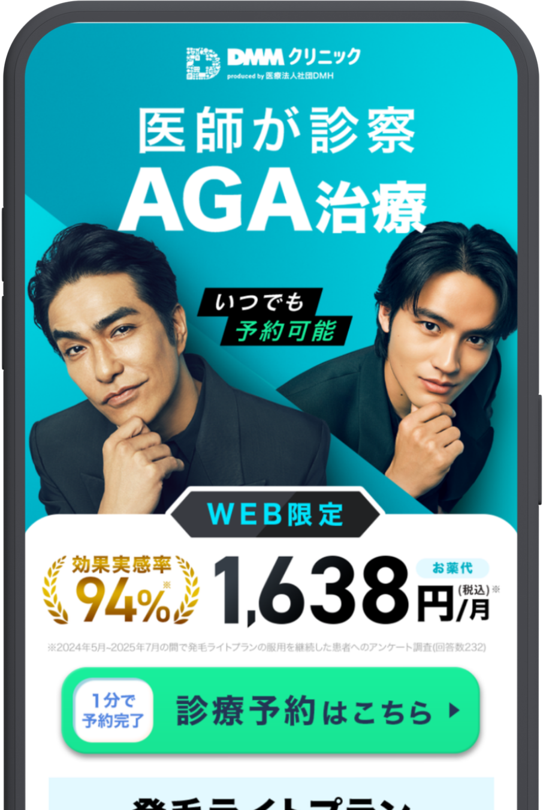 |
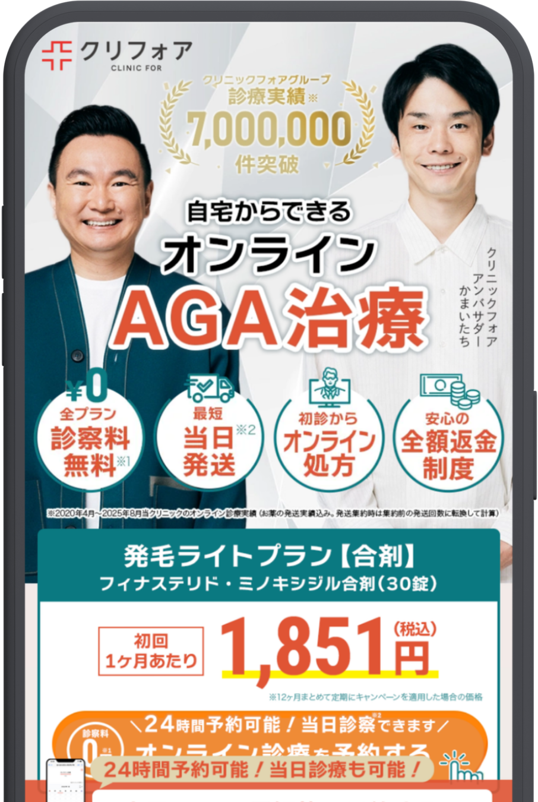 |
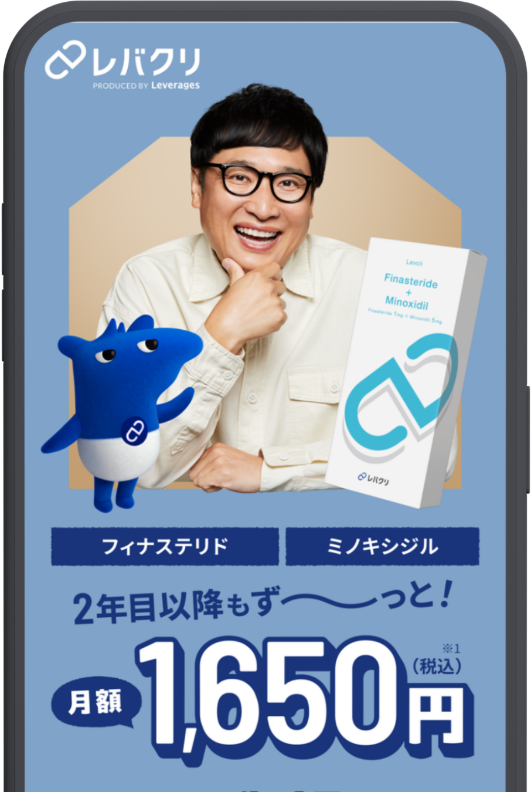 |
| 特徴メモ | 発毛コスパ重視 24時間診療で始めやすい |
予防費用を抑えやすい 対面併用も視野に入る |
夜22時まで 忙しい人向けの時間帯 |
| 診察料 | 0円 | 0円 | 0円 |
| 予防プラン目安 | 発毛ライトが中心 | 1,049円/月 | 1,349円/月 |
| 発毛プラン目安 | 1,861円/月 | 要公式確認 | 要公式確認 |
| 診療時間 | 24時間診療 | 朝7時〜24時 | 10時〜22時 |
| こんな人向け | 発毛も費用も重視したい人 | 予防メインで始めたい人 | 夜に受診したい人 |
| 公式サイト | 詳細を見る | 詳細を見る | 詳細を見る |
※料金・診療時間・プラン名は記事作成時点の参照情報をもとに整理しています。最新情報は各公式サイトで確認してください。
渋谷でAGA治療を始めるなら、立地・料金・治療方針の3軸から自分に合うクリニックを選ぶのが鉄則です。渋谷駅周辺・神泉・道玄坂・恵比寿・松濤エリアに12院が集まり、診察料0円・薬代だけで始められる駅前クリニックから、メソセラピーやエクソソーム導入まで扱う美容皮膚科まで、選択肢の幅は渋谷ならではの広さがあります。
「とにかく続けやすい価格で薬中心の治療を始めたい」なら、イースト駅前クリニック渋谷院・渋谷ウエストクリニック・恵比寿皮膚科クリニック・フィットクリニック渋谷笹塚院・ゴリラクリニックが候補。「個室でじっくり相談しながら発毛まで攻めたい」なら、AGAスキンクリニック渋谷駅前院・東京AGAクリニック渋谷院・スマイルAGAクリニック渋谷が有力です。「注入治療や再生医療も含めて本格的に発毛を狙いたい」なら、渋谷あおぞらクリニックや渋谷三丁目クリニックが選択肢に入ります。
もう一段踏み込んで「予算別の現実的な選び方」を整理すると、月予算1万円以内なら恵比寿皮膚科クリニック（フィナステリド1錠175円）・ゴリラクリニック（月3,000円）・フィットクリニック渋谷笹塚院（定期3,000円）・イースト駅前クリニック渋谷院（6ヶ月セット月5,945円）が現実ライン。月予算1〜3万円なら、AGAスキンクリニックのはじめて発毛プラン（月16,800円）・東京AGAクリニックのオーダーメイド処方（月27,500円）・渋谷あおぞらクリニックのAGAタブレットセット（月14,850円）あたり。月予算3万円以上で本格的に攻めるなら、AGAスキンクリニックのしっかり発毛プラン（月40,600円）や、各院のメソセラピー・エクソソーム導入までが選択肢に入ってきます。
最終的に大切なのは、複数院でカウンセリングを受けて比較することです。渋谷のAGAクリニックは、ほとんどがカウンセリング・初診料無料、もしくは数千円の院が多めです。気になる院を2〜3院ピックアップして、それぞれで頭皮チェックと治療プランを提示してもらってから、最も納得できる院に決めるのが失敗しにくい流れです。価格・通いやすさ・治療方針・スタッフとの相性まで含めて、自分にとっての「続けやすさ」を最優先に選んでください。
参考文献・公的情報